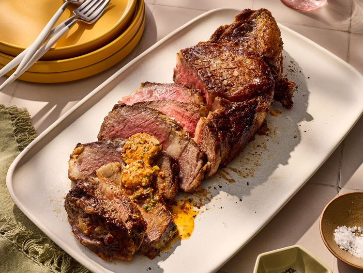

Cowboy Steak

Ingredients
- 1 (2 1/2-inch-thick) beef cowboy steak (bone-in ribeye), 2 1/2- to 2 3/4-pounds
- 1 tablespoon vegetable oil
- 1 tablespoon kosher salt
- 1 tablespoon freshly ground black pepper
Steps
- For compound butter, combine butter, parsley, mustard, rosemary, smoked paprika, garlic, and cayenne pepper in a small bowl. Spoon onto a sheet of waxed paper. Roll into a log. Wrap in the waxed paper. Chill in the refrigerator until firm, 30 minutes or up to 1 week.
- Let steak stand at room temperature for 45 minutes.
- Preheat the oven to 400 degrees F (200 degrees C). Place a wire rack in a foil-lined rimmed baking sheet.
- Heat oil in a 12-inch cast iron skillet over medium-high until it starts to smoke. Season steak generously with salt and pepper.
- Sear steak in the skillet until well-browned, 5 minutes per side, then 2 minutes on the fat cap side. Place steak on the rack in the prepared baking sheet.
- Roast 45 minutes or until an instant-read thermometer inserted into the center registers 135 degrees F (57 degrees C) for medium rare, or 150 degrees F (65 degrees C) for medium.
- Place steak on a cutting board. Tent loosely with foil. Let rest 10 minutes. Temperature will continue to rise as steak rests.
- Slice between meat and bone to separate. Thinly slice steak across the grain. Top sliced steak with Cowboy Compound Butter.
Home